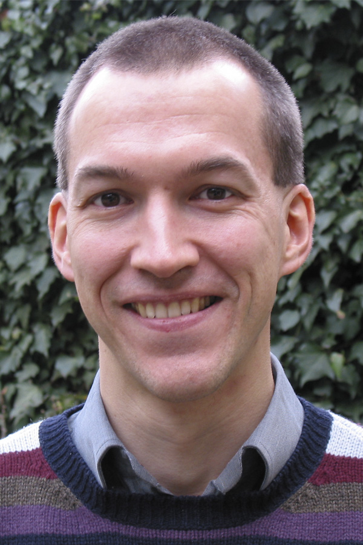

Members
Principal Investigators
Bram Adams, Polytechnique Montreal
Bram Adams is associate professor at Polytechnique Montreal (Quebec, Canada), where he heads the lab on Maintenance, Construction and Intelligence of Software (MCIS). He is fascinated by any problems related to release engineering and mining software repositories, with a particular interest in build systems, software integration and human affect mining. In the context of SECOHealth, Bram's lab aims to build a dashboard for monitoring the health of a software ecosystem from a wide variety of software development-related data sources.
(website)
Tom Mens, University of Mons
Tom Mens is full professor at the University of Mons (Belgium), director of the Software Engineering Lab since 2003, and vice-president of the UMONS research institute INFORTECH. His most recent scientific contributions focus on foundations, automation and empirical analysis of large-scale evolving software ecosystems. He also co-edited the Springer books “Software Evolution” (in 2008) and “Evolving Software Systems” (in 2014). He was previously involved in an interdisciplinary research project ECOS aiming to borrow techniques from ecology and natural ecosystems to better study, understand and support the evolution of software ecosystems.
(website)
Josianne Marsan, Laval University
Josianne Marsan is associate professor in Information Systems at the Faculty of Business Administration at Université Laval and associate fellow researcher of Research Chair in Digital Health at HEC Montréal. She holds a BSc in Computer science & Operational research, and a MSc and PhD in Business Administration with a focus on Information Systems. Her interests lie in OSS communities and ecosystems, as well as in the organizational lifecycle of information technology innovations, including their adoption, implementation, use and evolution. She has practical experience on designing, developing and implementing a homegrown ERP system based on open source programming languages in a medium-size company in Canada. In the context of SECOHealth, she is mainly responsible for gathering and analyzing experts' opinions about challenges for health and survival of software ecosystems.
(website)